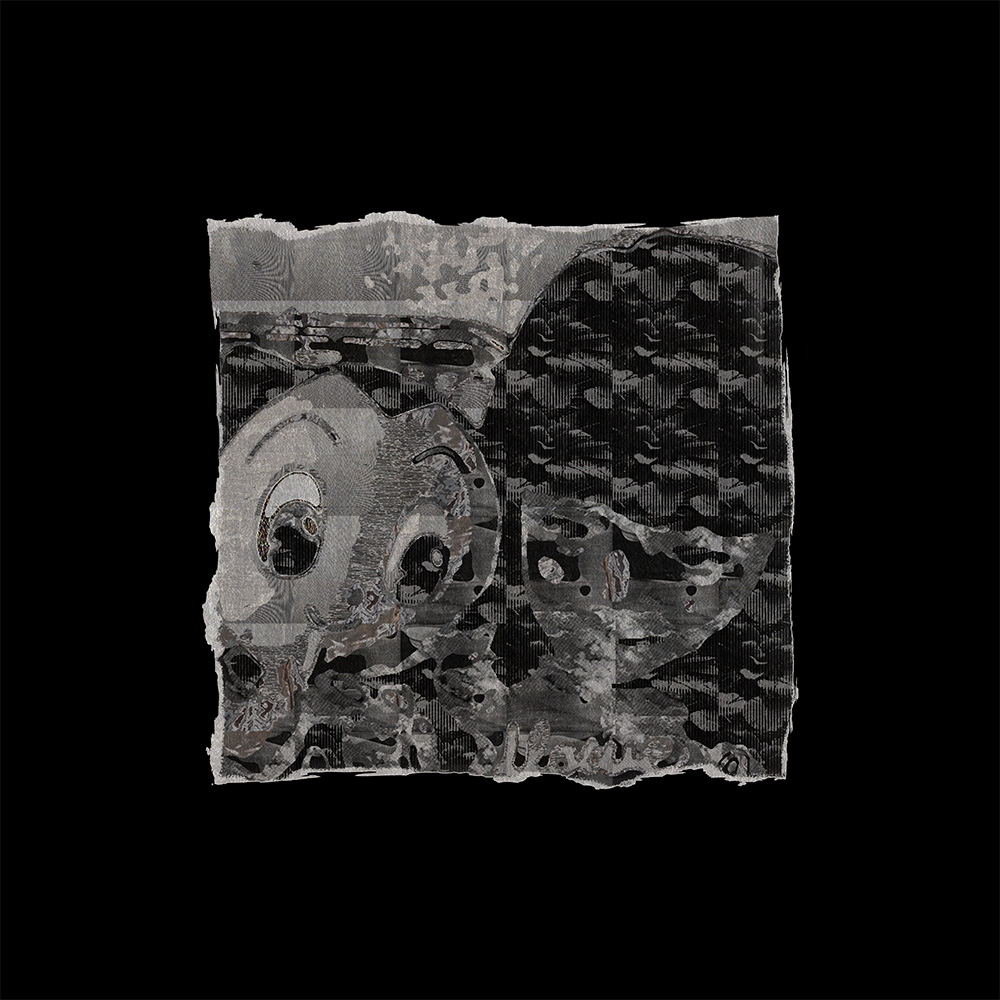
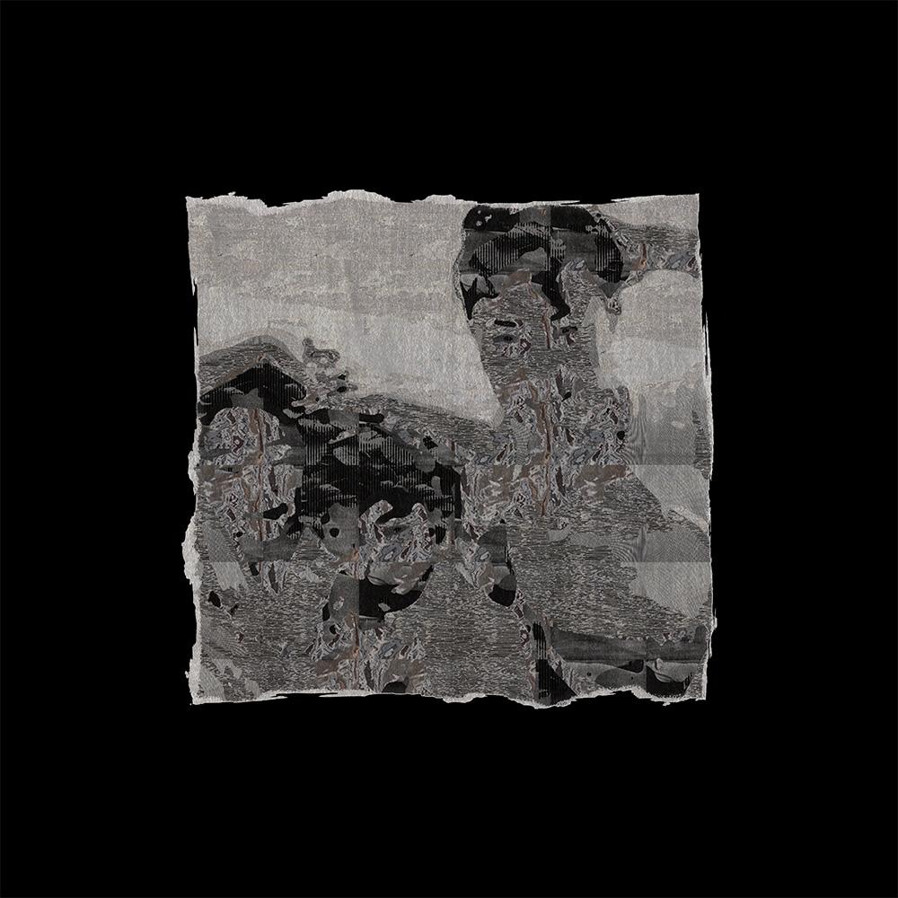

back
As Human Spirit Molds
As Human Spirit Molds is a personal exploration of my journey, blending mixed media, digital value translations, and scanning to reflect on my childhood, migration from Korea to the U.S., and my growth and resilience.
The monochromatic palette sets a reflective tone, while the zine cover serves as a visual gateway into layers of memory and emotion. As the cursor moves through these layers, it symbolizes the fluid nature of memory and personal transformation.
The project delves into storytelling and typography to highlight how narratives shape our identity.

"Tales" represent both real and fictional stories that contribute to personal growth, while "Molds" signifies both the act of shaping and the structured forms that influence our perspective.
The project reflects on my struggles as a young immigrant, underscoring how these experiences molded my understanding of the world.
Through visual storytelling and typography, As Human Spirit Molds invites viewers to reflect on the power of narratives in shaping the human spirit, finding beauty and peace in the unique threads of the human experience.
